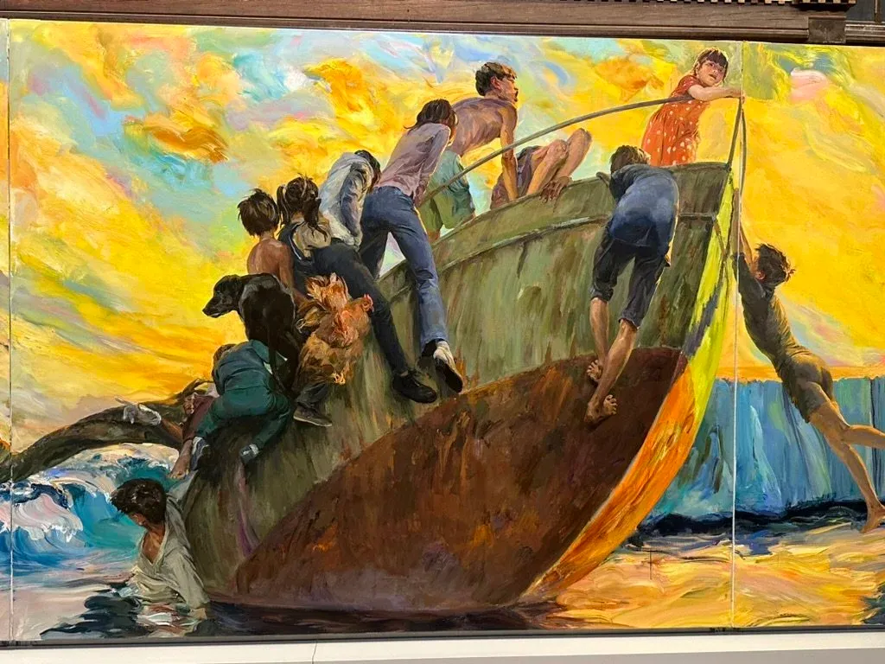

Essay · November 9, 2024
You’re No Good, Baby, You’re No Good
The zeitgeist of the 2024 Venice Biennale.

The painting above by Yu Hong of desperate people clinging to a broken lifeboat presumably while attempting to migrate to somewhere better, their desperation leading to their destruction, needs no extensive text to convey it’s profound meaning and impact.
Two years ago when we visited the Venice Biennale I noted it was a tough time to be a white male, for whom many of the sins of the world were attributed. In this year’s Biennale, that sense of indignation has expanded to include just about any and every body who has ever or now lives in a country that has ever been involved in any form of exploitation or suppression of other people, as colonials, or by gender, race, religion, contributing to climate change, or, well, everything. But particularly western countries with a Judeo-Christian history.
The exhibit is entitled Foreigners Everywhere. It doesn’t take much to qualify. But it leads to a number of observations:
- Because art is indigenous doesn’t mean it’s good. In room after room there were simplistic drawings or other media that stemmed from so-called indigenous peoples. Often they lacked detail, perspective, differentiation of faces, forms, buildings, or landscapes. They shed no light on culture or humanity. There seems no attempt to distinguish by quality or by unique expression. Is it unfair to compare them, for example, to the Chinese drawings and paintings on exhibit at the China Pavilion that are hundreds of years ago, yet beautifully and distinctly capturing places and people? It seems to me it’s an equally pernicious form of discrimination to accept something regardless of quality simply because it’s indigenous, treating them as one would a child’s output rather than subjecting them to even a minimal level of standards. Compare a Norman Rockwell drawing where each face in a crowd is distinct and expressive, to the bland repetition of much of the art on display.
- Because someone is some form of queer or outlier doesn’t intrinsically make them interesting. I’m sure to the people taking painting or taking photos of their friends and neighbors they mean a lot, but they don’t represent art, just somebody’s photo diary. Simply because two guys embrace or people dress flamboyantly doesn’t elevate the work to the level of art, of conveying something unique and distinctive. Put simply, it’s boring and uninteresting to anybody other than the people directly involved. And a curator so enamored with the imagery as to not be able to distinguish its quality or context.
- It seems like virtually anything put up on a wall can be repurposed to represent climate change, so long as there is a tendentious explanation to accompany the associated logic — for example, the notes from an exhibit that “functions as an enveloping inhabitable space that disorganizes the hegemonic constructive system.” What does that even mean? Here’s a question — if a purported work of art has to have a lengthy text explanation as to what it’s about, and doesn’t convey that within the work itself, does that make the piece a work of art or an extension of a concept? When someone sews together a whole bunch of fabrics and then claims it’s about climate change, doesn’t that really hold up. And that denigrates the works that truly convey meaning in and of themselves. A masterful construction displaying how people in Amazon rainforests have to create concoctions to capture rainwater because of how polluted their waterways have become.
- The oppressions referenced over and over in the exhibit were about behaviors and attitudes that have also been well and frequently exhibited in non-western societies with equal prevalence, but they seem to get a pass. Nothing about China’s destruction of its minorities or appropriation of Tibet, for example. Indeed the Chinese have to get the award for greatest hypocrisy in Venice, with the commentary on their exhibit including: “In this exhibition, the symbol employed is used to underscore the concept of integration. It symbolizes the convergence of a diverse spectrum encompassing different races, beliefs, identities, ideas, purposes, backgrounds, and cultures on a global scale. This character serves as an invitation, embodying absorption and acceptance, fostering opportunities for dialogue, communication, and mutual understanding.” Really? Wow. And they let that up on the wall?? Nor is there any mention of the Muslim world’s treatment of anybody classified as “other,” seeking to subjugate or murder them, or of their everyday horrific treatment of women. In fairness, a subtle and stunning exhibit in the Saudi Arabia pavilion made mention of women’s treatment there, a rarity and again, more a prize for PR then reflection of a national perspective. Perhaps the curator was afraid a fatwah would be issued for him if he included this reality.
- Some of the biggest examples of destructive behaviors are selectively ignored, which felt purposeful. For example, when a bunch of foreigners crashed planes into the World Trade Centers, murdering thousands and creating upheavals on a global scale, nobody talks about it. When massacres against Jews happen, whether the recent Hamas one or the repetitions of race-based murder and suppression for literally thousands of years, nobody here submits art about it.
Which raises the question, when do you get over it? In America, the black experience here of being forcibly abducted is profoundly different than that of other immigrant groups, who come with culture and family connections more intact. The repercussions of which still clearly resonate, in comparison to the lives of Latinos and Asian populations. And there is no doubt the horrendous rape of resources and peoples perpetrated by the colonial powers stripped nations of their opportunities and dignity. One can only imagine what the world of South America would have been like if the Spanish and Portuguese had never come — the diversity of languages and cultures and relationships to the environment. The danger is to romanticize it, for no government or society is immune to bad acts, and there was plenty of war, atrocities and bad acts in indigenous cultures; it’s current “indigenous” governments now destroying rainforest rivers.
Human nature doesn’t change, it just finds different ways to express itself, from spears and bow and arrow to guns and bombs, in the transcendental cross cultural eternal quest to find a bigger stick. And not all horrors are perpetrated by the western white guys. What about the Poppa Docs, or the Idi Amins, or the Maos and his successors, or a host of others?
- It’s rather ironic to rage against capitalism when the exhibit takes place in venues that reflect great concentrations of wealth and power, both historic, and made affordable by the present. Artists have always needed patrons, from the Médicis to the Rockefellers, and I have to wonder who foots the bill for many of these elaborate and clearly expensive installations and how the artists are compensated for them, well deservedly. And then there are the 800,000 of so “foreigners” who visit the Biennale and support it. Don’t get me wrong, I’m grateful for its existence, now in its sixtieth year, just want to put that in context as well. Also, it should be noted how important English is, whatever else it might metaphorically represent in the language of grievances, as the lingua franca which enables vast swaths of the world to communicate, which was critical for putting on a show like the Biennale.
Two years ago I wondered how much the assault on white males filtered through the zeitgeist, how much the backlash to it has explained the phenomena of Trump and right wing ascendants in Europe. This year evokes the further rages against overreaching cultural paradigms, that seem to be infecting academia and so-called progressive left organizations at the expense of large groups feeling betrayed and ignored. This is not a claim for right, wrong, or justification, but an observation on how these cultural phenomenon can infiltrate our societies and impact our politics, from MAGA rallies to academia.
The world of human nature has much to answer for, but that requires asking better questions, not raising ignorance to an art form.
You can read more prescient commentaries from the past 20 years about America, how we got to where we are and what we can do about it, in my book, Views from the Side Mirror: Essaying America, which ranks highly on Amazon. I’d love to hear what you think about it. https://amzn.to/2H4SmDz. And more of my writing, fiction, stories, film and such, at thezog.com, where you can subscribe as well. Let me know what you think, and what you’re thinking!